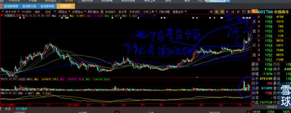
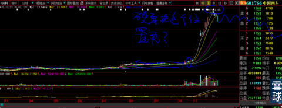

故事梗概是这样的：南极科学考察队的两个队员，在跨过一个裂开的冰缝时，看到一只幼小企鹅在缝隙中挣扎。其中一名队员情不自禁的俯下身去用手要把它拿出来。另一个队员制止他说：“在人类没有踏上南极之前的亿万年里，正因为这些自然天灾现象，保持着这里的生态平衡，正因为没有人祸的干预，南极才是企鹅们丰衣足食的天堂。今天如果因为你的干预增加一点点打破大自然自身生态平衡能力，将来不仅对企鹅的未来会有影响，甚至可能危及人类，蝴蝶效应就是这个道理。
这个队员含着眼泪又重新把幼小的企鹅放入冰隙中去，一边继续向目标前进，一边泪流满面的为那只小企鹅祈祷，期望它能够靠自己的力量，爬出那在人类看来仅仅是举手之劳的巨大沟壑。
仅仅是5天前，你们中自己清楚的一部分人中，天天纠缠不休的在我聊天工具里留言“心大，我明天要买中国南车、中国北车，你怎么看”？
看着这些连个“您”字敬语都不会用的文盲玩意，气就不打一处来。再想想股市这个地方不管怎么说也是银子钱的地方，还是耐心的给了两种回复：1、你要找死问我干什么？2、不作死不会死。
今天刚刚回家，打开电脑，看到那么多新粉又在聊天里留言“心大，我14元多套在中国南车、中国北车里面了，怎么办”？
虽然我一方面心里感觉怪怪的：“你14元多买的中国南北车，怎么问我怎么办”？另一方面想起这个小企鹅的故事。纠结的结果还是我那颗不可遏制的同情心战胜了本应维护自然生态环境的理性，回复他“卖掉它！虽然不知道你的未来能不能活下去”。
我知道我这样说的后果是什么：就那些“新鲜肉的菜鸟”们，狗屁不懂的玩意，明天万一盘中即使小涨哪怕只有2%，他也会对老子破口大骂。但是......我也是人，是人哪有不犯贱的啊！
下图中，那么明显的主力建仓后拉平台，长达2个半月时间的5.2元价格不买，再放量做股价起飞前的7天预热时间5.7元不买。

偏要等累计10个涨停板后的14元多去买，不就是因为“中国南车”前面连续10个涨停板激起他们“财富效应”的欲望了么？说到底全部都是“事后诸葛亮”的翻版，再过几个月，你们又会看到同样前赴后继在同样的高度位置冲进浙江龙盛、闰土股份，肯定又会是我拦都拦不住的结果。不信？走着瞧。
为什么前几天我说：不要管那些买在“欣旺达”高位的人，他们被套后就老实了，谁能敢说他们不是“傻人有傻福”呢？最起码被散户抗跌不抗涨的人性强制摁住了他不安分的手，只好坐等翻倍的财富进门，谁敢说“塞翁失马”不是“焉知非福？。
你要知道中国南+北车是多大的盘子吗？中国南车138.03亿股+北车122.6亿股=260.63亿股*14元价格的总市值=3648.8亿元。知道大盘为什么连续两天大幅下跌吗？就是因为它俩的宽幅下跌，带动并给关心大盘的老手、各路大资金+大小庄家极大的对大盘未来几天走势明确恐惧信号：大盘要下跌！

大盘什么时候止跌？看看中国南北车就知道了，券商股就是“书童陪公子读夜书，瞎熬夜”。
所有会看大盘的牛人们有什么了不起的？你每天扫一眼类似的大盘股标的，也一样知道明天的大盘指数会怎样走。就像我周二回复被套中信证券粉丝说“中信证券明天（周三）就会有小反弹，最起码不会跌破上次的第二个跌停板位置”一样，都是小把戏。问题是，你看懂我写得那么明白的“小反弹”那是什么意思吗？
lzfq@炒的是心:山煤国际这支股有什么特别之处吗？很好奇您关注此股的原因啊，昨天出了预亏公告。
炒的是心@lzfq: 我有一个女同事有一天说：买股票就要买100块价格的，一个涨停就是10元，3.5元价格的股票没劲，一个涨停才3毛5元。
我的回答是：天啊，我咋今天才发现你怎么这么聪明呢？怪我眼拙，之前看你走眼了。今后我买股票就这么干！低价、资源丰富，数年大牛股都是从低价股里产生出来的，这就是见识和阅历。假设一个牛市，200元股价的股票涨到400元非常艰难。5元的股票只要有题材、业绩支撑，风来的时候涨到20元非常轻松。
CHlNA018@炒的是心:我第一次向你求问：安邦踢门抢盘民生，这些第二第三股东纷纷举械交货走人是岀于什么影响?政治权力的干预除外，谢谢！
炒的是心@CHlNA018: 呵呵呵，你觉得一个炒股票的人能懂政治么？就像你问一个唱歌的：阿富汗还会打起来吗？
小卫之晓@欲言却止:我给中国南北车50元价格估值，要结合我所有的文章来看的，不能单单看一篇。现在国泰君安已给出即使没合并的北车目标价是18元，按它的逻辑，2015年底北车（不含合并）目标价22元。那南北车合并后呢，我认为有30元。它是业绩支撑的。2016年EPS为1元左右。
炒的是心@小卫之晓: 我就是在拿中国南北车的业绩在说事：再说一遍，基本面分析+具有起码的估值能力才是入市的最起码的1年级入门槛，在我这里仅仅会一点基本面分析能算多大的本事？
假设你是一个手趁几千亿的有钱人，试想能够有几千亿的人不会是傻瓜吧？你今天面对一个收购目标：对方股本合并高达近300亿股，每股净资产不到3元，未来3年每股最好水平盈利或许、大概、可能会达到0.5—0.8元之间，就算每股1元好了。再把所有的有利它的因素全部给它相加，例如全世界国家的高铁都给中国好了，未来所有的可能利空因素全部视而不见的排除：不会发生地缘政治、军事、经济冲突，全世界和睦一家人，每个国家都对中国感恩戴德，绝对不会发生违约事件好了（你们的帖子不就是这样写出来的吗？），今天就要你用它未来这种靠排除一切不确定因素后最大30年可能实现的全部累计盈利的价格买入这个巨无霸公司，你会答应吗？
你的结论如果是不答应，那为什么就有那么大的胆子，胡吹海吹的说：中国南车、中国北车未来至少要用30倍市盈率，会走到30元到50元的价格。你知道30倍市盈率是什么意思吗？这样的市盈率只能给什么样的成长性公司估值吗？就连浙江龙盛这样高垄断性高门槛的公司，我做它的估值分析时，也是首先拿最高15倍的市盈率对应有没有翻倍再翻倍的可能性空间先做保守预算，才敢于再进行技术分析研判进出场时间和顺序。我不知道你们这种天大的胆子，是什么坚不可摧的力量给撑腰出来的。
说你是钱多撑出来的吧，感觉又不太像。
其实您功力已经很厉害了，能够逻辑分明就已经很了不起。我又不是瞎子看不见和没有一丁点的判断能力。之所以写“《601766中国南车：技术到底有多重要》，是实在看不下去新菜鸟的飞蛾扑火。在公众场合说话，首要考虑的就是受众对象的能力，站在对方的位置考虑说话的分寸。中国南车的此时非彼时。2014年9月、2014年11月所有问我是否买中国交建、券商股票的人，我都是回复“你是天生富贵命”。同样还是这些我之前极力看好的同一只股票，但凡稍微有点经验的人都知道现在是多么明显的头部区域。所以，我对无论是老粉还是新人，再问这些股票的回复就是：去死！
小卫之晓@炒的是心:首先谢谢心大的点评。谢谢。
也许南北车是头部区域，我不大懂看这个 ，所以一直买卖点总是抓不准。
我上周五抄底的原因是这么看，也许不对，希望心大批评指正。
南北车2015年eps可以做到0.6元，假如合并成功的话，至少可以节约0.1元的成本吧，大概0.7元。未来3年，远的不敢说，根据目前的订单，至少20%的增长。现在我用18-20倍的pe买入。当然这个价格并不便宜，但我是做长期投机的。在合并的博弈中，以及在一带一路的概念炒作中，以及在习大大和强哥的推荐下，获得一定的泡沫估值，我觉得概率还是挺高的。所以我就建仓了。个人陋见。
炒的是心@小卫之晓: 中国南车2015年1月22日创下的这么尖的顶，后期必会有假突破，那是你们逃命的最后机会。你去研究一下我写的帖子《各种类型的头部假突破》，凭您的悟性，10分钟就应该比人家1年学到的都多。这个系列帖子还有很多占空位的题目，就因为老是要回答你这样的问题占用时间。我会尽快写出来。另外忠告一句：我看到你那里转发的关于中国南车会走到50元的分析，只差喷饭。还所谓H股价格低会导致的它总市值怎么算+未来你们自己都已经把最好的假设出来也才那么点利润，再去对应股价，看看你们是不是在发烧说胡话并且自己的逻辑都是那么坚决的在诉说对你们自己的攻击？我用这么重的口气跟你们说话，是因为看到你们都是有很高学历、资深研究经历，还是如此菜鸟才会大声呵斥，一般性菜鸟我早就一句话打发了。
既然你是“做长线10年价值投资”的人，我现在就教你一招，保管比你读一辈子书都受用：你也算老手了，应该记得2007年炒黄金股时的所有券商和牛人的分析报告，计算全部“上市公司拥有所有权以及隐形所有权”的矿山含金量，未来100年可以产出多少黄金，按照即使金价跌到800美元1盎司，也有几百亿的利润等等诸如此类的报告。就像但斌一口咬死贵州茅台有多少原酒，折算未来多少价值同出一辙。我相信在2015年后的未来，黄金股再次超越历史大顶的时候，这些报告又会再次出笼，天底下就没有新鲜事。
既然他们可以这样算，那么我反问你：
1、是不是所有拥有铁矿石所有权的上市公司，都可以这样算？凭什么只有贵州茅台可以？只许州官放火不许百姓点灯？
2、岂不是所有只要有库存的公司或者有更大生产能力、技术能力的公司都可以这样算？例如服装、格力空调、水资源、煤炭、石油。那么它们的股价为何还要上下过山车？你如果说这些跟茅台酒不一样，不可以这样说，我再问你：难道贵州茅台就不是一年一年的通过时间的消耗像衣服需要一件一件卖出似的一瓶一瓶的兑现利润？你如果再顶嘴说“贵州茅台有收藏价值”，那么贵州茅台为什么要千方百计扩大产能和系列酒的推广呢？你为什么不直接去买一幅世界名画好了。这本身就说明贵州茅台同样是处于竞争性行业，难道一样是竞争性行业的贵州茅台就有不被腰斩的免死牌？
3、人类不是过了今天就没有明天，你不存在的时候，人类会继续代代相传，这些价值是绵绵不断一年一年逐渐兑现实现的，按照你们的逻辑计算，那么今天所有的股票都没有天花板，问题是谁来买呢？交易对手何在？卖掉的人换成现金后干什么呢？天天在家数钱玩？
4、就凭我上述给你的回复，就已经打败所有假牛人貌似环环相扣实则逻辑狗屁不通的装逼。也可能他们根本不懂这些基本的生意常识和生意经，如果他们敢回答：这些道理老子早就知道。好了，这样就等于他们自己把自己押上了道德的历史审判台上去了：因为他们所散布的一切所谓价值投资观念不打自招都是骗人的鬼话，就要冒头戴“骗子”帽子的风险 。
结论：这些人已经是处于心理学上“囚徒困境”状态。不知道“囚徒困境”为何的人，可以去百度给自己长点“姿势”。
小卫之晓@Wojtek:短线跟长线是两码事，很难聊到一块的。
炒的是心@小卫之晓: 这是所有写股评人最后的一块的遮羞布。
水过地皮湿@wunanyx:呵呵，按照他（炒的是心）这逻辑南北车是股市的风向标啊？南北车市值加起来市值加起来有三千来亿，中信也是三千来亿，券商不怕，中国南北车的市值就怕怕？
炒的是心@水过地皮湿:看你这个“傻儿”说这话，上帝也会笑死。想起早年看到的一个场景：刚从卫校毕业的小护士，声色俱厉的训斥已经生过6个孩子的农村大妈：已经快要”临盆“了你怎么还在地里劳动？你就不怕难产死掉？至于人家已经生了一炕孩子的大妈听不听得懂”临盆“是什么意思的事实视而不见。
先不说那么多，
1、就凭我在2014年7月28日从技术上发现“601800中国交建”跳空高开的一瞬间，就明白中国股市未来会发生什么，2014年9月初我把4元股价的“601800中国交建”列入我到雪球来的第一只专题分析股，写出《“中国交建”为什么会成为沪港通后最具操作性第一股》那么精湛的个股基本面、技术面、市场心理、未来外围资金进场后市场性质、操作手法、大资金对手盘会发生那些新变化，A股将迎来全新的市场格局的专贴，又从个人操作的可行性方面分析它为什么会成为最适合散户、大资金“大众情人”的牛股，苦口婆心教仅有的23个粉丝“每天再多的牛股涨停，能够帮你实现盈利目标和导致亏损的只能是你手中持有的股票，其它股票的涨跌关你屁事”？就这样从无数可能性中挑出最大确定性、具有操作性的精湛帖子，在当时只有那么一点点看客流量情况下，仍然还有那么多跟你一样的傻逼像你今天一样的乱喷，在那个大盘低迷的时候，无非就是嘲笑我“市场哪有那么大的资金量去做这种大盘股”？如同你们今天信心满满一样“现在市场这么多的资金量还怕中国南车炒不上去”？既然什么道理都被你们如同掌握真理一样玩弄股掌，你咋就不懂得回头看看它们的历史，问一问自己一个最简单的问题：中国南北车已经上市那么多年，为什么95%时间趴在大底不动？这应该给你带来什么启发？
2、面对一个能够在2014年11月20日写出“《券商板块的行情启示才刚刚开始》，散户不要被前期的涨幅所吓倒“，又在“券商板块”即将冲顶的2014年12月19日的最后时刻写出《人多的地方不要再去》”的人，你连起码的内心逻辑活动+起码的敬畏之心都没有就敢信口开河，老话说“三岁看到老”估计你这一辈子也就这样了。大盘行情骤起的2014年11月28日，面对散户的手足无措，我写出”《就买中国建筑》一个月涨幅50%就出局，先把你们在2014年的亏损捞回来攒够种子资金再说“，此时”中国建筑“的股价是4.18元。2014年12月18日当中国建筑股价超过6.2元之后，我又开始声色俱厉的训诫老粉：今天中国建筑已经完成1个月50%涨幅目标，今后你们被套在里面不要再问我了。你再去看看我对600401海润光伏在什么时间说”等它跌到7元以下再进场“？股价跌破7元后，仅仅15个交易日股价涨幅50%后的2015年1月22日，海润光伏股价冲高到9.79元时我又开始警示“9.7元先卖掉，退出来等跌到8.5元以下再说”。我倒是要请教你：面对海润光伏只用4天时间就跌回到8.29元的今天，你能感知它会跌到什么位置？还有未来吗？那天讥讽我在9.7元卖掉海润光伏的大妈怎么不敢再站出来展示她人傻、钱多的凌云豪情？
@炒的是心 回复 心光大道：
2015年1月30日“全聚德002186”股票我已经截图，还有那个一起干的”兄弟科技“。
全聚德是”赤子之心私募基金“赵丹阳的第一心头肉重仓股，可能是两种原因：1、昨天是1月最后一天，股价长期爬在哪里不动，如果第一重仓股没有比较大的涨幅（你们研究股价图就知道了），这个月的私募排名就死翘翘了；2、之前他们整年都不闻不问，可能出于“2014年反正业绩就那样了破罐子破摔”，如同ST股票，反正今年是亏损，索性把未来几年的费用都预提足，未来的年份业绩打翻身仗。任何能够值得引起我思考的问题一定有蹊跷：现在是2015年1月份就开始争夺私募业绩排名话，那么2015年难道他们想月月都争取靠前？这不符合“中国用美金去重金拍下巴菲特晚餐第一人”赵丹阳及其赤子之心基金操盘理念的承诺呀？3、全聚德个股也好还是”赤子之心“的持股理念也罢，都是靠企业长期缓慢的复合成长业绩计划好的10年的长跑运动员。奇怪的是，昨天甘愿冒”股价操纵之嫌“，用收盘竞价这种极端的方式，用仅仅103.81万股成交量就把一个2.8亿股流通盘的股票钉在涨停板上，不惧任何更大的持仓人借机逃跑砸盘狙击，值得我的继续深思。只能说明：1、盘面已经如此之轻；2、大额持有人之间有了攻守同盟的默契；3、无论怎样玩，都改变不了它长跑运动员的本质，除非就不是赵丹阳了，那就是“赤子之心私募基金”可能退出了全聚德股票，现在是新资金在坐庄；4、有重大利好消息，但是这个可能性基本可以直接排除，否则这种方式涨停抢筹，除非泄露消息的人不想活了。所以我截下它最后一分钟的分时图留作纪念。同时，我对它未来几天的走法，已经了然在胸。
4、从我以上的回复，您也看得出，并非您一问我随口就说，起码昨天查阅和思考了很久很久。也间接的抨击了你们对“股神盲目崇拜”：其实事事都辛苦，这个世界没有免费的午餐，就是比别人多下功夫，通往财富之路没有捷径。马路上熙熙攘攘忙忙碌碌的人，都是想赚钱快想疯了的人，但是付出有效思考的人有几人？更别说能够立刻、马上动手开始下功夫的人。所以我一直劝大家：要懂得敬重你身边靠实力起家的有钱人！保不齐人家能够随便几句话就拨开你10年都悟不通的道理。而时光一旦流失，是人生唯一无法用钱买回来的最贵重筹码。